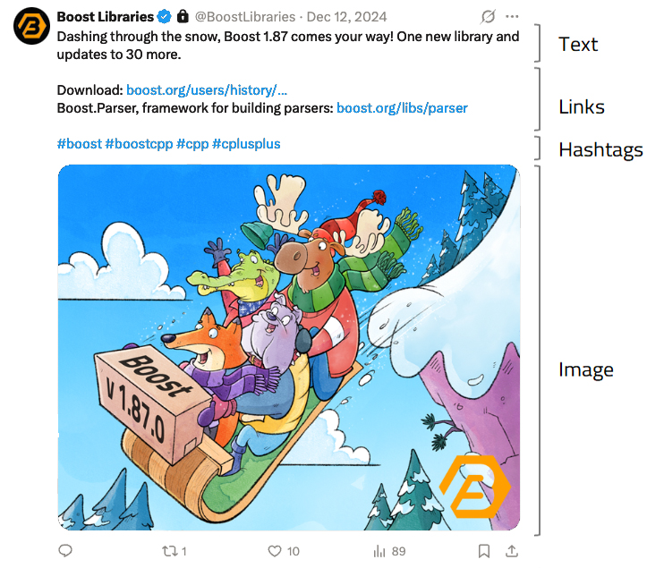

Tweeting
The collection is represented on social media by the @BoostLibraries X (formerly Twitter) account, where news and information about our libraries in particular and C++ in general are shared with the community.
What gets Posted
The account publishes two types of posts:
-
Official posts: These inform the community about new releases and libraries, library proposals, review schedules and results, and generally all the events associated to the evolution and deployment of the project. Official posts have a Boost brand imagery with watermark, and are produced by volunteers.
-
Non-official posts: Everything else. Imagery for these posts is not branded so that they can be told from the former. Anyone from the community can propose a non-official post for publication; if you’re interested in doing so, follow these simple guidelines:
Topics of Interest
-
Upcoming C++ events, meetups, conferences, etc.
-
Talks about some particular library, or where such library is put to good effect.
-
Boost-related articles, blogposts, C++ Committee papers.
-
Interesting discussions ongoing on Reddit or some other online forums.
The list is not exhaustive: if in doubt, just go with your submission or ask for guidance using the same submission channel.
Post Structure

Text: Make it short and attractive. Posts in X are currently capped at 280 characters, but you should strive for even less than that: one or two sentences should suffice. Go straight to the point and phrase your sentences with a clear call to action ("learn about", "watch", "contribute", you get the idea).
Link(s): After the text, the post must include a link (or maybe more) to the piece of news, talk, etc. you’re posting about. Links can be provided as-is or with a short introductory text (like "Check it out: link"). There’s no need to pass the links through an URL shortener: X does it automatically with its own shortening service.
Hashtags: The post should end with the following:
#boost #boostcpp #cpp #cplusplus
plus other hashtags specific to the post you’re proposing. Experiment with different hashtags to see what X search brings on them.
Image: Always provide an image to go with the text —this dramatically increases the visibility and reach of your post. The image should be as large as possible. X accepts any aspect ratio, but given that the majority of accesses will be through a mobile device, consider ratios close to 1:1 or even taller than wider. In our era of constant fight for attention and information overload, the actual content of the image is less important than how it will stand out amidst X infinite scroll: so, favor colorful, original images that will make readers pause for a moment and read the post (which is where the real info is shared).
Making the perfect post is not trivial: if you need inspiration, go to @BoostLibraries for actual post examples.
Post Submission
Log into the C++ Language Slack Workspace
(or join it if you’re not a member yet)
and post a message in the
#boost channel, including:
-
Main text
-
Link(s), with or without introductory texts
-
Hashtags
-
Attached image (or link to it)
The team in charge of @BoostLibraries may make some editorial adjustments to your submission or get back to you to help them polish the final post. Also, they will schedule the publication date and time for maximum impact (typically, on weekday mornings with an eye to catching readers both sides of the Atlantic, but this may be adjusted for events specific to some country or geographical area).